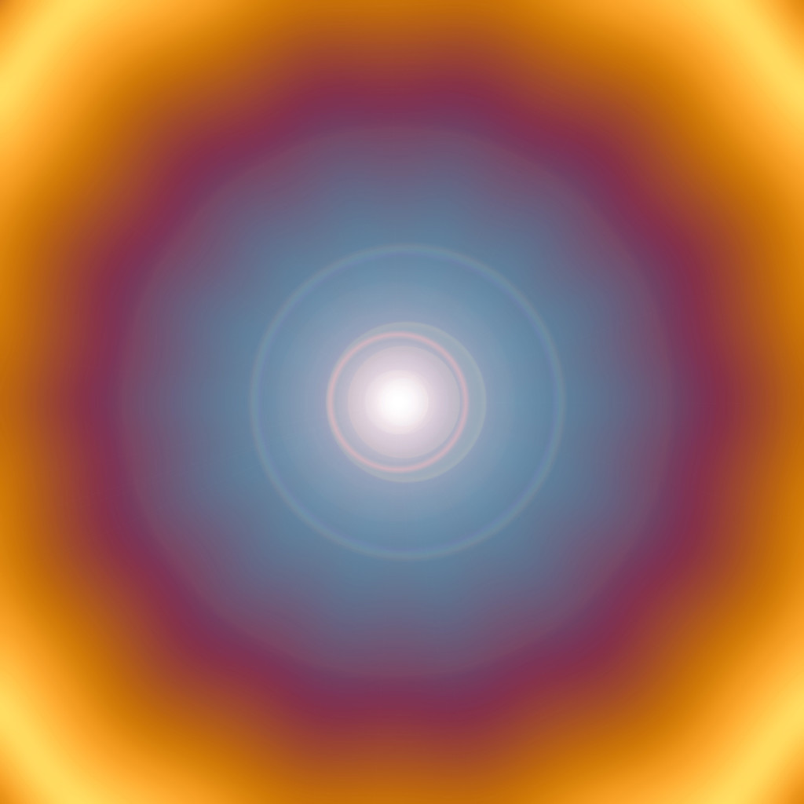

Mysterious LHC Photons Have Physicists Searching for Answers
THREE WEEKS AGO, upon sifting through the aftermath of their proton-smashing experiments, physicists working at the Large Hadron Collider reported an unusual bump in their signal: the signature of two photons simultaneously hitting a detector. Physicists identify particles by reading these signatures, which result from the decay of larger, unstable particles that form during high-energy collisions. It's how they discovered the Higgs boson back in 2012. But this time, they had no idea where the photons came from.
If—and at this point, it's a big, fat if—this bump is real and not a statistical anomaly, it is a game-changer for physicists' understanding of the universe. The signature can't be explained by the Standard Model, the current rulebook for how all particles behave and interact. That could mean entirely new physics—though what kind, researchers don't yet know.
"We were like, 'Whoa, what is that?'" says Adam Martin, a physicist at the University of Notre Dame who recently submitted a paper theorizing about the bump to arXiv, the online, pre-peer review science repository. "What if it's a new particle? What if it's two?"
The physicists' excitement comes with a heavy dose of pragmatism. No one is claiming that the bump is a new particle yet because the data simply isn't good enough. "I can't tell you if this bump is going to break the books or just fade away," says Don Lincoln, a physicist at Fermilab who works with CMS, a group that detected the bump. Their measurement had a one in 10 chance of being a statistical fluke.
Those odds are no cause for fanfare, but CMS isn't the only team that measured the bump; another, Atlas, saw it too. Atlas's measurement had a one in 100 chance of being an anomaly—also not great, considering that the gold standard for a particle physics discovery is one in 3.5 million. But taken together, the two results were enough to get the field excited.
To improve those odds, physicists will attempt to confirm the signal during the LHC's next batch of collisions this upcoming April. But in the meantime, the theoreticians are cranking out explanations. If the bump is real, what could it be?
One possibility is that the photons come from a graviton, a theorized particle that carries gravitational force the same way that photons carry electromagnetic force. The current understanding is that gravitons should be massless, but this graviton would have mass—and because it has mass, it could indicate the existence of smaller dimensions invisible to everyday life.
Another possibility—one that Martin's paper develops—is that the photons indicate a heavy cousin of the Higgs boson. Many theories currently predict the existence of multiple Higgs bosons, but experiments have only revealed the one that nabbed the 2013 Nobel Prize in physics. The existence of certain Higgs bosons would support some theories of supersymmetry, an attractive hypothetical genre that could shed light on physics' big questions. Some supersymmetry theories could explain why the Higgs boson exists, or identify the source of dark matter in the rotation of galaxies.
Less likely, says Lincoln, is that the bump could come from a heavier particle that physicists have never seen before. Experimenters measured the bump after the LHC's highest-energy collisions yet, which means that they can produce those heavier particles.
But physicists aren't battling over these conflicting theories. It's more of a team effort, with each theorist presenting a potential piece of the puzzle. "It's not that theorists might think some theories are bad," Martin says. It's simply the name of the game, he says, to dig as many rabbit holes as possible to explain the physics. And now they're burrowing down pathways that are consistent with the new measurement.
Martin says that some half dozen times during his career, he's worked to develop a theory around an exciting new experimental measurement—only for the measurement to evaporate into mythological artifact of statistical randomness. Or vice versa.
"I used to work on theories that had no Higgs boson," Martin says. "Too bad for me." So the physicists proceed with cautious excitement.